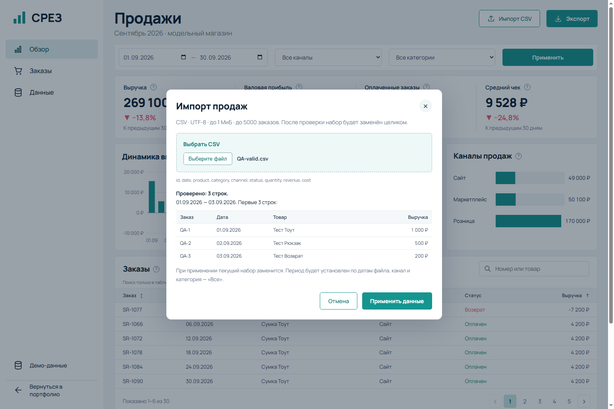
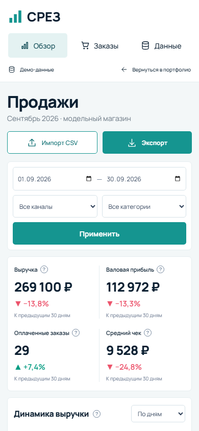

Показатели
Выручка после возвратов, валовая прибыль, оплаченные заказы и средний чек. Сравнение с предыдущим периодом той же длительности.
Аналитика модельного магазина: четыре ключевых показателя, динамика выручки, каналы и таблица заказов. Один набор данных — один прозрачный расчёт.
Попробовать дашборд ↗
Выручка после возвратов, валовая прибыль, оплаченные заказы и средний чек. Сравнение с предыдущим периодом той же длительности.
Выбор периода, канала и категории. Дневная или недельная агрегация и каналы продаж на одном срезе.
Поиск в таблице, сортировка и страницы. Просмотр отдельных строк не меняет общий расчёт выбранного периода.

CSV проверяется целиком до применения. Предпросмотр, понятная ошибка строки, атомарная замена набора и возврат к демо-данным.
Экспорт содержит строки по выбранным фильтрам. Значения, похожие на формулы таблиц, нейтрализуются в текстовых ячейках.
Скачать пример CSV ↓
Валовая прибыль учитывает только выручку и указанную себестоимость — не комиссии, налоги или все расходы бизнеса. Реальных интеграций с магазином и заявленного роста продаж здесь нет.